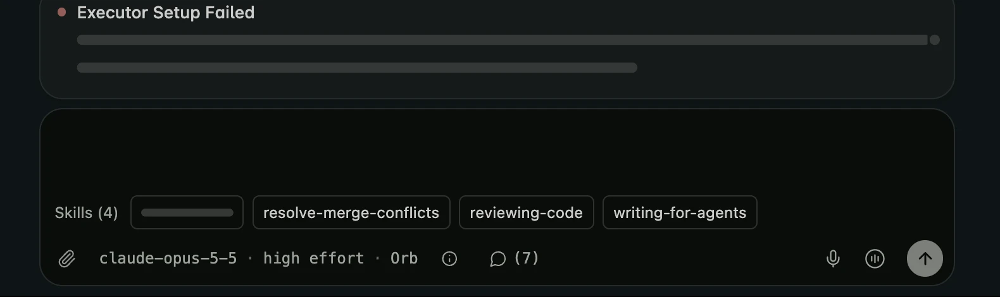
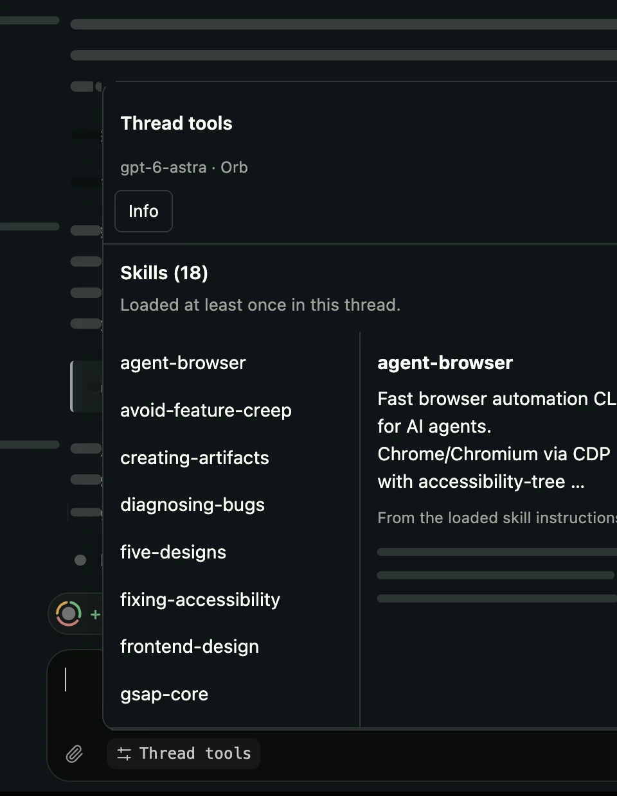
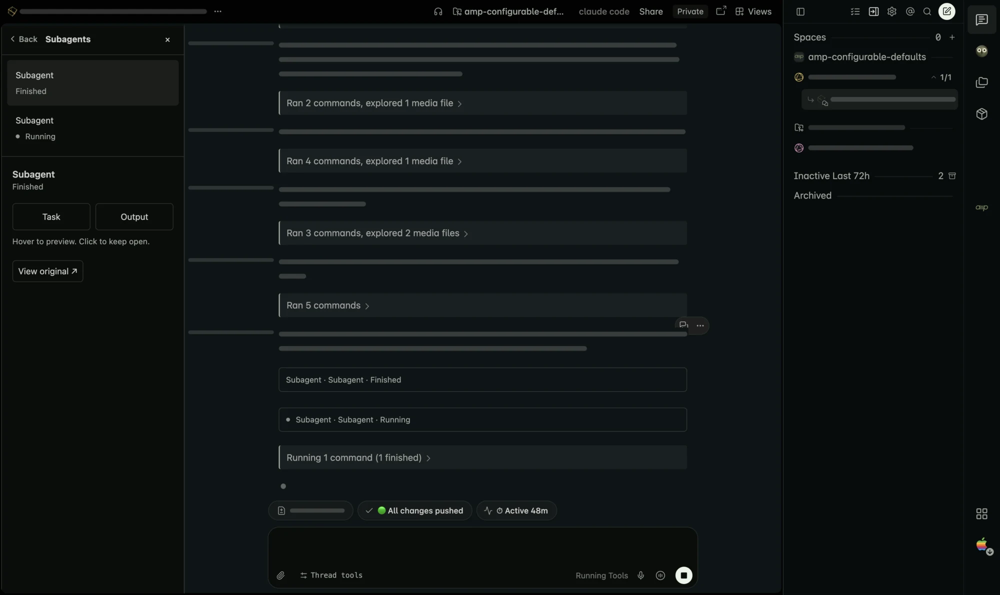
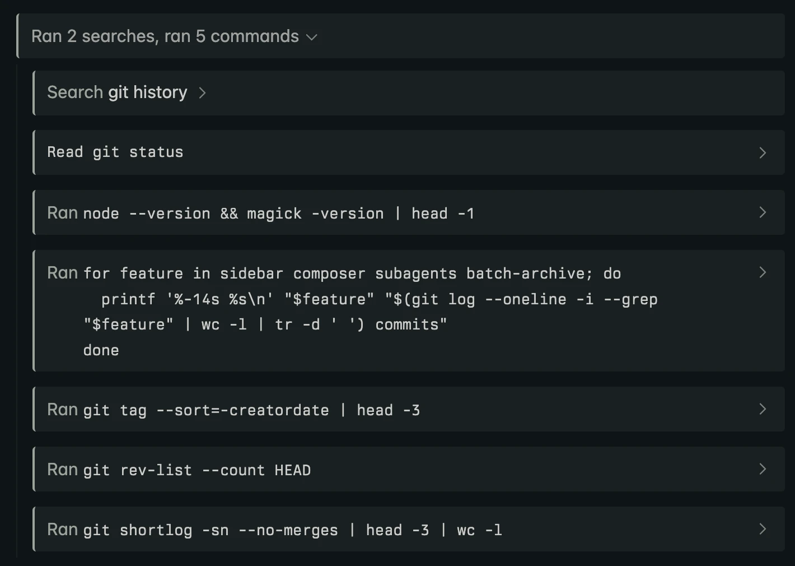

Keep tools opposite navigation.
Files, Changes, Terminal, Desktop, and Portal move left in right-sidebar mode. Their dividers resize in the direction you drag. Left mode restores Amp's native placement.
Features · Store 1.4.1 and 1.4.3 source preview
Everything the extension changes in Amp, grouped by where you'll
notice it. Features marked New are
in the 1.4.3 source preview, merged into main but not
yet in the Chrome Web Store's 1.4.1 release.
Recently merged into main. Load the source to try them
before the next store release.
Try the source preview
Put navigation where you want it and keep tools out of its way.
The sidebar starts on the right. Click the pinned extension icon for settings. The sidebar header arrow and Move sidebar to the right setting switch placement only. The toolbar's R/L badge shows your saved side.
In right mode, drag the divider to set your width. Double-click to restore Amp's width. Your choice stays put across tabs and browser restarts.

Files, Changes, Terminal, Desktop, and Portal move left in right-sidebar mode. Their dividers resize in the direction you drag. Left mode restores Amp's native placement.
Child thread rows indent 20px per level, up to 64px, on either side. Amp's own parent-child order is unchanged.
In right mode, hovering or focusing a sidebar thread opens Amp's native thread card to its left. Amp still owns its content and dismissal.
Read two at once, tidy many at once, and keep Spaces apart.
Keep a reference conversation beside the thread you're working in. Drag a sidebar thread to the left or right edge of the conversation to open a second pane inside the same Amp page, not the browser's Split View. Both threads keep Amp's native composer.
Prefer the keyboard? Focus a sidebar thread and press Alt+Shift+Left or Alt+Shift+Right. Drag the divider to resize, use its arrow keys, or double-click to reset to an even split. Drag the same thread to the other edge to move its pane without reloading it.
Use the pane's close button before opening a different thread. Closing or reloading ends the split; it isn't saved. New splits need a window at least 768px wide. Existing panes stack vertically below that width.

In the 1.4.3 source preview, the select button in the sidebar header starts selecting. Click rows, Shift-click a range, or press Space on a focused row. Each expanded group offers Select all, and a bar above the sidebar footer shows the count and an Archive button.
Right-click a project heading for Archive All N Threads, or Select Threads in Group to adjust first. A thread's right-click menu adds Select Threads, Add to Selection, Archive N Selected, and Clear Selection.
Every archive asks first and says how many threads are running, which Amp stops when archived. Archived rows slide out right away, and Undo unarchives them.

In the 1.4.3 source preview, each visible coordinator or worker gets its own context, Info, Messages, Subagents, and tool previews. Switching workers clears the previous worker's controls. Space workers aren't counted as Task subagents.
The thread's context, right where you write.
In the 1.4.3 source preview, successfully loaded skills appear above the toolbar, each listed once. Hover or focus a name for an instruction excerpt and location when available. Click to open Amp's Skills settings in a new tab without losing your draft.
See the model, explicit effort setting, and runner name or Orb beside Info, Subagents, and, when messages exist, Messages. Click Info for the thread's title, project, mode, visibility, runner, and working directory when available.
When space gets tight, Thread tools folds these controls into a popover above the toolbar. Your draft, attachments, and send button stay available. In a roomy composer, Skills opens the same panel. Info, Subagents, and Messages opened from Thread tools have a Back button to return to it.


The Messages control appears only when threads have exchanged messages. Read each message, see delivery status and attachment counts, or jump to its original transcript entry. The 1.4.3 source preview puts the newest messages first. This panel reads messages; it never sends them.
A compact label shows the thread's model, explicit effort, and the runner name or Orb. Hover it for the mode and directory. It refreshes on thread changes and at most once a minute while the tab is visible.
Less scrolling through activity. More time with the answers.
Open Subagents from the desktop composer toolbar in the 1.4.3 source preview for a compact agent list opposite navigation. Hover or focus Task or Output to preview a wider reading sheet. Click to pin it open.
Read headings, lists, links, code, and tables as formatted content, rather than raw text. Formatted reading sheets are already in 1.4.1. Files and Changes can stay alongside the list; narrower desktop windows use an overlay. Escape closes the sheet first, then the panel. View original reveals the selected activity inline, with smooth scrolling and highlighting.

Amp collapses tool-call sections by default. The 1.4.3 source preview adds Expand tool-call sections, which opens each one as it appears, and Fade long tool-call sections, which starts sections over five calls with a fading preview. Click the preview or status header to reveal every loaded call.
With fading enabled, long Bash commands show eight displayed lines, including wrapped lines. Show full command reveals the rest; Show less folds it back.
Bash, Read, Grep, and List activity use readable code blocks, preserving full commands, search patterns, and file line ranges. Read, Grep, and List show Amp's summaries, not invented shell commands.

The 1.4.3 source preview can add full calendar dates to Amp's message times. Enable Amp's Always Show Timestamps, or hold Option or Alt to see them. The date option is off by default and makes no extra requests. Amp controls when timestamps are visible.
Tool rows get a subtle tinted background and left border. Subagent activity has a compact inline summary, and active agents' dots pulse gently, or stay still with reduced motion.
Every feature has its own switch. There is no master switch.
In the 1.4.3 source preview, the gear in Amp's sidebar header opens the same settings inside the page, including in the Windows app. It stays available even if you hide the placement switch. Desktop only.
Choices apply across open Amp tabs and survive restarts. Preferences stay in the local browser or app profile, not synced between devices or shared between Chrome and the Windows app. Switching sides doesn't switch off other features.
Click the pinned toolbar icon for the popup, right-click it and choose Options for a full page, or use the sidebar gear. All three share the same saved preferences.
| Setting | Default | When off |
|---|---|---|
| Move sidebar to the right | On | Native left sidebar; also controlled by the sidebar header switch |
| Resize and remember right-sidebar width | On | Native width, no right resize handle; saved width retained |
| Keep auxiliary views opposite the sidebar | On | Native view placement and divider input |
| Indent child threads | On | Native row spacing on either side |
| Show placement switch in sidebar header | On | No injected placement switch; the settings gear stays |
| Enable subagent reading panel | On | No Subagents control; native inline activity |
| Enable thread message panel | On | No Messages control; native messages stay unchanged |
| Show model and runner in the composer | On | No composer label; thread info can still load data |
| Show thread info in the composer | On | No Info control; details stay in Amp's title bar |
| Show skills used in the composer New | On | No skills list or skills history requests |
| Fade long tool-call sections New | On | All tool rows and complete Bash commands shown |
| Expand tool-call sections New | On | Sections stay collapsed until you open them |
| Show full dates in message timestamps New | Off | Amp's time-only timestamps |
| Batch archive threads from the sidebar New | On | No select button, selection mode, or added menu items |